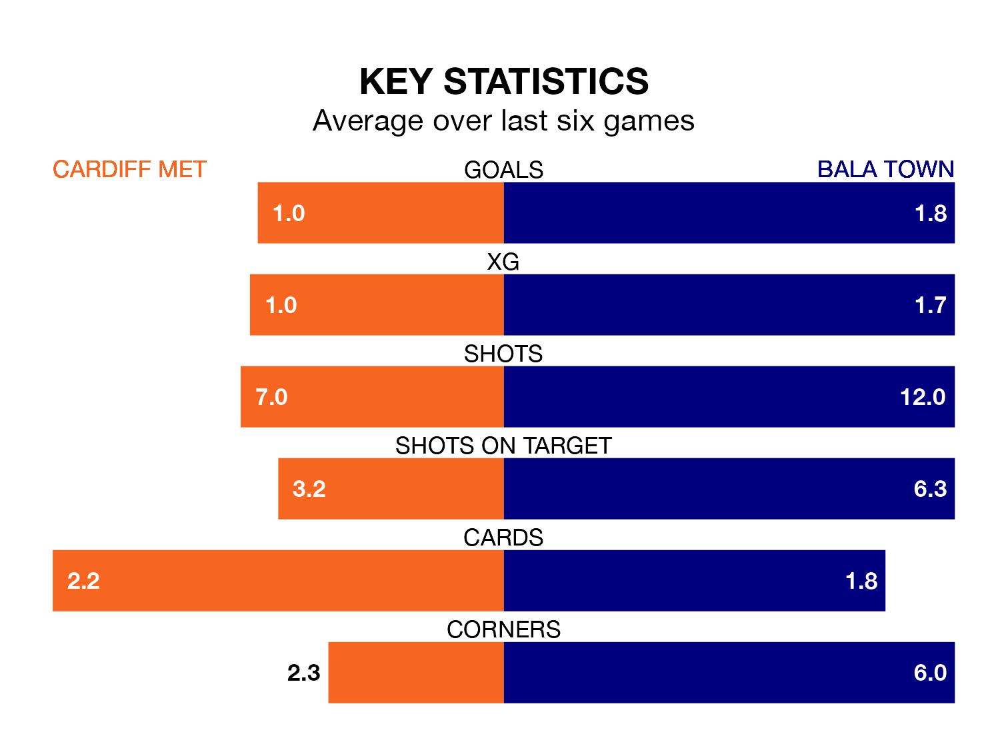

Cardiff Met host Bala Town in Saturday's early match at the Cardiff International Sports Stadium looking to bounce back from defeat last time out in the Welsh Premier League.
The Archers, who sit zero in the league after 27 games, fell to a 2-0 away defeat to Newtown on March 9.
They face a Bala side who secured a draw in their last match, a 1-1 tie with Caernarfon Town, and who sit third in the table.
Cardiff are in bad form in the Welsh Premier League, with no wins and three draws from their last six games.
With three wins and two draws over that period, Bala's form is much better – they have taken 11 points from 18, compared to the Archers's three.
In the last 10 years, Cardiff and Bala have played each other on 25 occasions. Cardiff won seven of them, Bala 11, and they drew seven times.
On average, the Archers scored 0.9 goals and the Lakesiders 1.3 in those matches.
Their last meeting was on February 3, when they played out a 1-1 draw.
With 32 goals in 27 games so far this season, the hosts are the league's joint-zero-lowest scorers with 1.2 goals per game. And they are conceding more than average, letting in 50 goals at a rate of 1.9 per game.
Town are also below average scorers, with 1.2 goals per game, compared to a league average of 1.5. They have conceded 0.9 goals per game.
Updated: 15:10 (UTC), 15/03/24